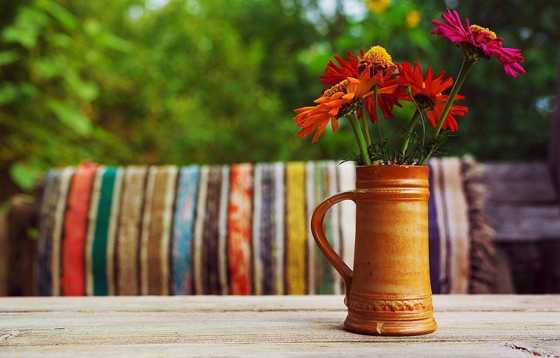
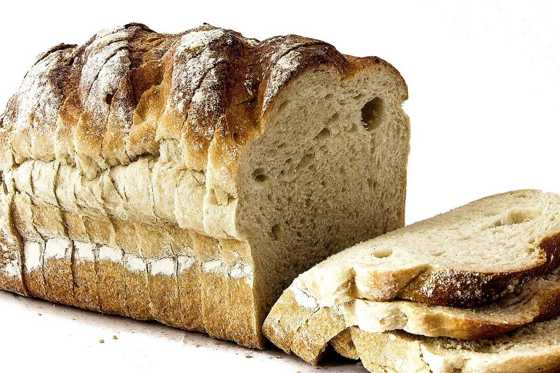

日替わりのランチ
地元産の野菜と本匠米を使ったワンプレート。数量限定で、予約はInstagramのDMで受け付けていると紹介されています。
価格: 準備中
カフェ / 大分県佐伯市本匠
バスで走っていたカフェが、本匠の緑の中で、腰をおろして待っている。
キッチンカー「cafe bus.is」から始まったお店です。広い敷地の窓辺とテラスで、ごはんとパフェ、コーヒーをどうぞ。

お店の由来と想い
cafe isは、もともと佐伯市を中心に移動販売をしていたキッチンカーのカフェ「cafe bus.is」です。2023年に、佐伯市本匠のサービス付き高齢者向け住宅「みどりの郷 優しい風」の敷地内に店舗を構えました。
取材記事によると、店主さんは「広々とした所でお店を始めたい」という思いでこの場所を選んだそうです。店内は天井が高く、大きな窓から自然光が入り、外には緑と風を感じるテラス席があります。キッチンカー時代からの常連さんも多いと紹介されています。
店名の意味は確認できていません。上の内容は公開されている取材記事などによるもので、最新の状況はInstagramでご確認ください。




メニュー
以下は取材記事などで紹介されていた内容の一例です。内容は日替わり・季節で変わります。価格・提供時間は準備中です。
地元産の野菜と本匠米を使ったワンプレート。数量限定で、予約はInstagramのDMで受け付けていると紹介されています。
価格: 準備中

旬のくだものを使った、甘すぎない大人向けのパフェ。季節ごとに内容が変わります。
価格: 準備中

季節のクリームソーダやレモンスカッシュ。コーヒーは佐伯市の焙煎所の豆を使っていると紹介されています。
価格: 準備中

ガトーショコラなどの焼き菓子や、本匠米のお持ち帰りがあると紹介されています。
価格: 準備中



口コミ イメージ例
以下は制作側が作成したイメージ例で、実際のお客様の声ではありません。
イメージ例大きな窓から光が入って、ゆったりできました。ひとりでも入りやすかったです。
イメージ例野菜の多いランチで、食べたあとも体が軽い感じ。ごはんがおいしかったです。
イメージ例テラスで季節のパフェを。風が気持ちよくて、つい長居しました。
アクセス
〒876-0202
大分県佐伯市本匠大字笠掛1583-1
営業日・営業時間・ご予約はInstagramでご確認ください(電話: 準備中)。
写真はフリー素材のイメージで、店舗の実際の様子ではありません。実際の店内・商品写真は貴店ご提供のものに差し替えます。